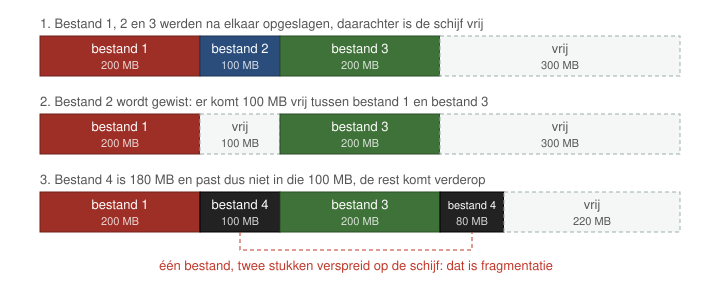

Fragmentatie komt voor op het niveau van werkgeheugen maar ook op dat van bestanden.
Onderstel dat er drie bestanden na elkaar werden opgeslagen op de harde schijf (bestand 1 = rood, bestand 2 = blauw en bestand 3 = groen). Vervolgens wordt het tweede bestand gewist.
Na verloop van tijd komt er een nieuw bestand bij (bestand 4 = zwart). Dit bestand is groter dan bestand 2. Het moet dus worden verspreid op de harde schijf om toch nog opgeslagen te kunnen worden.
